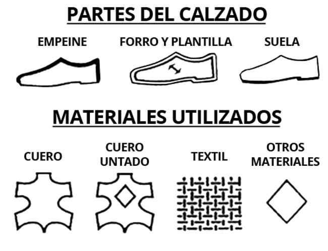

Nike tiene más de 500 lugares en todo el mundo y oficinas en 45 países fuera de Estados Unidos. La mayoría de las fábricas están situadas en Asia, incluyendo Indonesia, China, Taiwán, India, Tailandia, Vietnam, Pakistán, Filipinas, Malasia, y la República de Corea. Nike no se atreve a revelar información sobre el contrato con las empresas que funciona. Sin embargo, debido a las duras críticas por parte de algunas organizaciones como Barbie.com, Nike ha divulgado información sobre su contrato de fábricas en su Informe de Gobierno Corporativo.
Nike nunca tuvo una estructura productiva propia. La empresa emprendió su camino con diseño y marketing y desde el primer momento encargó la producción de sus colecciones a terceros. El grupo fue uno de los primeros en el negocio de la moda que apostó por ir a China en busca de costes más competitivos para fabricar sus zapatillas y sus prendas. Sin embargo, en Estados Unidos, la compañía mantiene todavía 68 fábricas con 13.992 trabajadores.
El grueso de la producción de calzado se concentra en Vietnam, China e Indonesia, donde en 2013 se fabricaron el 42%, 30% y 26% del total de las zapatillas de la compañía, respectivamente. La empresa tiene también acuerdos de aprovisionamiento de calzado en Argentina, Brasil, India y México, cuya producción se destina a estos mismos mercados. La mayor fábrica de calzado que en la actualidad produce zapatillas deportivas para Nike genera el 6% del total.
En cuanto a las prendas de vestir, éstas se producen en 28 países. El grueso de la producción de ropa se concentra en China, Vietnam, Tailandia, Indonesia, Sri Lanka, Pakistán, Malasia, Turquía, México y Camboya. Del mismo modo que ocurre con el calzado, la principal planta productora de prendas de Nike fabrica el 6% del total de pedidos del grupo.
Por otro lado, la compañía cuenta también con proveedores en Europa. En España, Nike trabaja con Estampados Frama y Sago, en Mataró (Barcelona), e Iruña Comunicación Textil, en Villafranca (Navarra). El foco productivo de la empresa en el mercado europeo se encuentra en Italia, donde suma 14 talleres que superan el millar de trabajadores.
Nike explica en su memoria de 2013 que sus operaciones internacionales y sus redes de aprovisionamiento están sujetas a riesgos habituales tales como las fluctuaciones de divisas, los aranceles, las medidas antidumping, las cuotas, medidas de salvaguarda, restricciones de comercio y, en ciertos países, la inestabilidad política e incluso el terrorismo. En este sentido, Nike afirma que buscará alternativas si los costes de producción en un país se disparasen o si el ritmo de fabricación se viera alterado. En este sentido, Nike ve como un riesgo a tener en cuenta su total dependencia de proveedores externos, a cuyos trabajadores se ve en la necesidad de formar. En el caso de que le fallara una de las fuentes de suministro, Nike asegura que le sería difícil localizar productores alternativos, con personal cualificado y a costes competitivos. La compañía también contempla una posible subida de los salarios que encarezca los costes productivos.